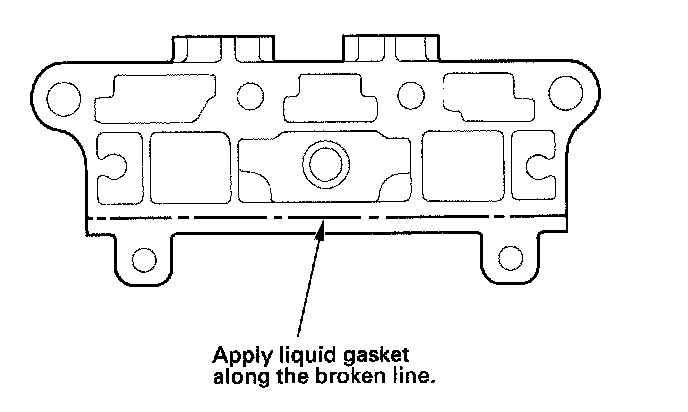
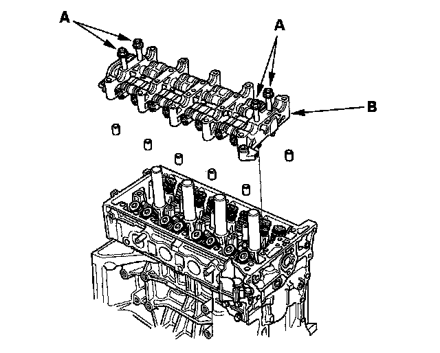
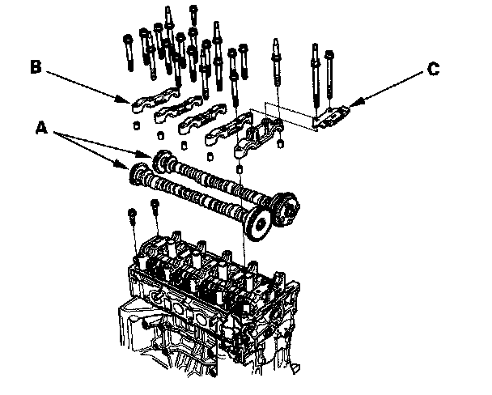
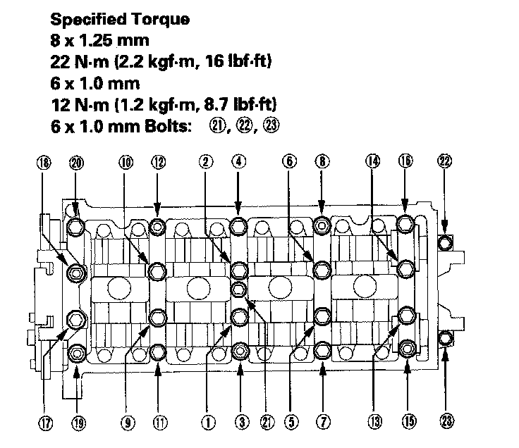

Rocker Arm Assembly Installation
Rocker Arm Assembly Installation1. Reassemble the rocker arm assembly.
2. Clean and dry the No. 5 rocker shaft holder mating surface.
3. Apply liquid gasket, P/N 08717-0004, 08718-0001, 08718-0002, 08718-0003, or 08718-0009, evenly to the cylinder head mating surface of the No. 5 rocker shaft holder.
NOTE: Do not install components if too much time has passed after applying the liquid gasket (for P/N 08718-0002, no more than 4 minutes, for all others, no more than 5 minutes). Instead, remove the old residue and reapply the liquid gasket.

4. Insert the bolts (A) into the rocker shaft holder, then install the rocker arm assembly (B) on the cylinder head.

5. Remove the bolts from the rocker shaft holder.
6. Make sure the punch marks on the variable valve timing control (VTC) actuator and exhaust camshaft sprocket are facing up, then set the camshafts (A) in the holder.

7. Set the camshaft holders (B) and cam chain guide B (C) in place.
8. Tighten the bolts in sequence to the specified torque.
NOTE: If the engine does not have bolt (21), skip it and continue the torque sequence.

9. Install the cam chain, and adjust the valve clearance.